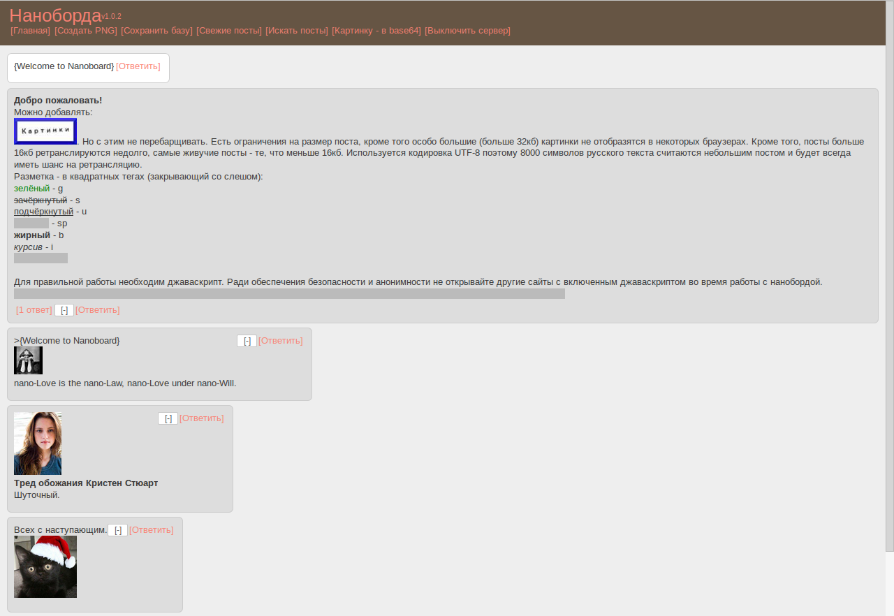

Тебе надоела анальная модерация на всех существующих имиджбордах?
Всякие Абу и прочие мешают твоему свободному общению?
Мы знаем выход из этой ситуации!
Ты спросишь меня: "Что это за хуйня, блядь?".
Я отвечу! Это новое слово в существовании анонимных имиджборд.
Тут нет никаких злых модераторов, которые удаляют все твои мысли.
Тут нет никаких раковых тредов, которые, наверное, тебе надоели.
Здесь все твои друзья, анон!
Да очень просто! Я тебе поясню по-хардкору:
1. Сначала ты идёшь по этой ссылке и качаешь последнюю версию клиента.
Внимание! Клиент стабильно работает на всех платформах: Windows, Linux, OS X.
2. Распаковываешь архив и единожды запускаешь nboard.exe
Никакого вишмастера внутри нет. Приложение чистое, не верь никому!
3. После первого запуска появятся различные файлы:
port.txt - настройка порта. Веб-клиент Наноборды будет доступен по адресу 127.0.0.1:порт (Указан в файле)
places.txt - места парсинга png-контейнеров. Пока что доступно одно место парсинга. Мы будем паразитировать на других бордах, а значит файл будет расти
useragent.config - конфигурация юзерагента. Можно ничего не менять здесь.
key.txt - уникальный ключ. Если ты, анон, захочешь с кем-то провести личную беседу - ты можешь использовать свой уникальный ключ. Никто не сможет прочитать твой пост.
style.css - файл каскадных стилей. Да, анон, ты сможешь сменить облик Наноборды. Сделай как тебе удобно.
А теперь поговорим о папках.
containers - папка, где будет лежать твои png-картиночки. Закинь туда любой png-файл.
download - папка, где содержатся загруженные png-контейнеры. Nuff said.
upload - папка, где содержатся созданные тобой png-контейнеры.
4. После того, как ты немного разобрался с файлами и папками - запусти клиент ещё раз.
5. Далее набирай в браузере 127.0.0.1:* (Порт из port.txt)

Внешний облик веб-клиента Наноборды
6. Объясню тебе как ей пользоваться:
Главная - Nuff Said, анон. Сам догадаешься.
Создать PNG - функция, которая создаёт png-контейнер из твоей png-картинки. Будет в папке upload
Сохранить базу - функция, которая сохраняет все посты в папку с клиентом.
Свежие посты - функция, которая открывает страницу, где будут показаны все свежие посты.
Искать посты - функция, которая начинает поиск постов из мест, которые указаны в файле places.txt
Картинку в base64 - функция, с помощью которой можно переконвертировать любую картинку в base64 для постинга на Наноборде
Выключить сервер - функция, которая просто выключает клиент.